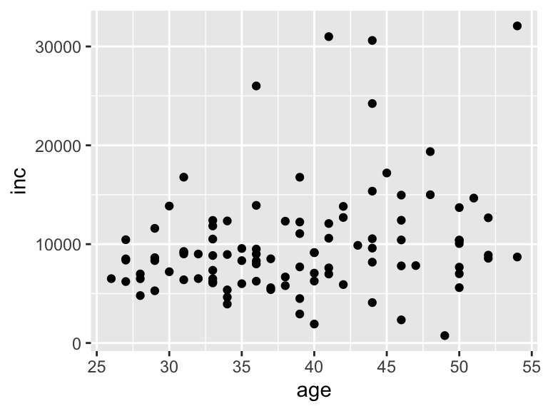
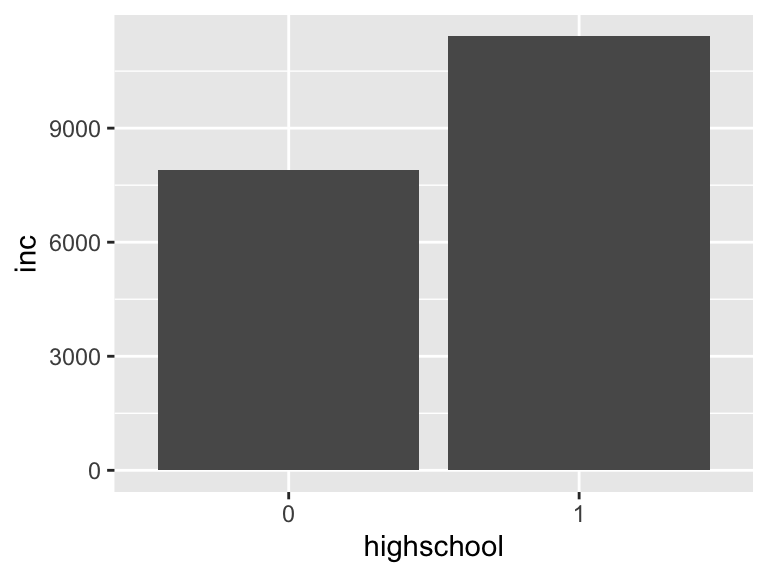
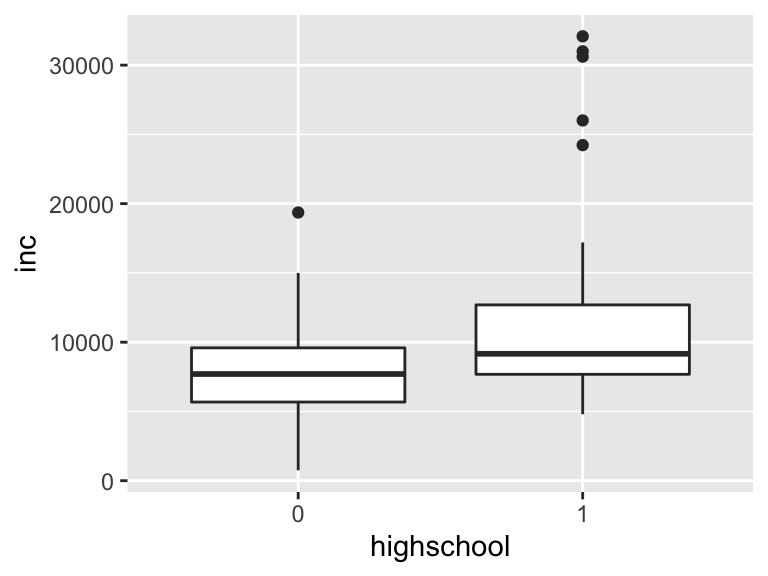

Chapter 10 データの可視化
【Section 10.3に関連動画を紹介しています。】
データをグラフによって目に見える形でわかりやすく整理する「可視化」は論文においてとても重要です。 卒業論文では、データや結果を適切に伝えられるよう、グラフを作成していきましょう。
Rではggplot2というパッケージで見やすいグラフを作成することができます。
ggplot2はtidyverseに含まれています。
まずはggplot2の基本的な書き方について説明します。ggplot2は以下のように記述します。
使用するデータフレーム %>%
ggplot(aes(x = x軸の変数名, y = y軸の変数名)) +
geom_グラフの名前()- 1行目で使用するデータフレームを宣言し、パイプでつなげます。
- 2行目でグラフに各変数を宣言し、+でつなげます。
- aesはaesthetic（美的、「エステ」の原語）の略です。
- 3行目で使用するグラフの名前を宣言します。
geom_bar: 棒グラフgeom_hitstogram: ヒストグラムgeom_boxplot: 箱ひげ図geom_point: 散布図geom_smooth: 回帰直線
10.1 1変数の可視化
まずは、主要な変数がどのように分布しているかを可視化してみましょう。 1変数の可視化は、変数がどのような変数かによって使うグラフが異なります。 ここでは、カテゴリ変数に対する棒グラフ、連続変数に対するヒストグラムを説明します。
10.1.1 棒グラフ
ここでは、1つのカテゴリ変数の分布を示すための棒グラフについて説明します。
例として、savingに含まれる世帯人数sizeがどのように分布しているかをみてみましょう。
saving %>%
mutate(size = as_factor(size)) %>% #sizeをカテゴリ変数に変換して上書き
ggplot(aes(x = size)) +
geom_bar()
1変数の分布を示す関数はxのみを指定すれば良いです（yは不要です）。
geom_bar()は何も指定しなければ縦軸を観測数（count）にしてくれます。
ここでは家族の人数が4人が最も多く、以下5人、3人…の順に多いことがわかります。
10.1.2 ヒストグラム
ここでは、1つの連続変数の分布を示すヒストグラムについて説明します。
例として、savingに含まれる年間収入incをヒストグラムにしてみましょう。
saving %>%
ggplot(aes(x = inc)) +
geom_histogram()
棒グラフと同じくxのみを指定すれば良く、縦軸は観測数になっています。
ヒストグラムで重要なのは、ビン（棒のことです）の数や幅です。
geom_histogramはデフォルトでビンの数binsを30としていますが、見づらい場合は変えてみましょう。
例えば、ビンの数binsを15に減らしてみます。
saving %>%
ggplot(aes(x = inc)) +
geom_histogram(bins = 15) #ビンの数を15に指定
ビンの数が少なくなり分布が滑らかになりましたが、細かい情報が見えづらくなり一長一短です。
工夫したい方は、ビンの幅を定めるbinwidthや位置を定めるcenterやboundaryも活用してください。
10.2 2変数の可視化
変数と変数の関係の可視化は、研究結果を示すのに重要です。 2変数の場合、それぞれの変数の種類によって適切な図が異なります。
- 連続変数と連続変数：散布図
- 連続変数とカテゴリ変数：散布図・棒グラフ・箱ひげ図
- カテゴリ変数とカテゴリ変数：棒グラフ
10.2.1 散布図
連続変数と連続変数の関係を示すには、散布図が良いです。
散布図を描く関数がgeom_point()です。
ここでは、年齢ageと年間貯蓄incの関係を見てみましょう。
saving %>%
ggplot(aes(x = age, y = inc)) +
geom_point()
2変数なので、xとyを指定します。xが横軸、yが縦軸になり、通常はxが独立変数、yが従属変数となります。
散布図ではそれぞれの点が観測値となっています。
このデータでは、年齢と年間収入にはそこまで関係がないように見えます。
散布図に回帰分析で推定される回帰直線を足してみましょう。
回帰直線を描くコマンドはgeom_smoothです。
saving %>%
ggplot(aes(x = age, y = inc)) +
geom_point() +
geom_smooth(method = "lm", se = FALSE)## `geom_smooth()` using formula 'y ~ x'
ggplotはグラフを+でつなげて重ねることができます。ここでは、geom_point()で散布図を描き、その上にgeom_smooth()で回帰直線を重ねています。
geom_smooth()の引数methodでは、どのような線を描くのかを指定します。lmは線形モデル（linear model）を指定しています。（指定しないと別の線になります）
seは標準偏差を見せる引数ですが、これをFALSEにして見せないようにしています。
カテゴリ変数と連続変数の関係を示すのにも、散布図を使うことができますが、弱点があります。
ここでは、教育年数educから高卒以上のダミー変数highschoolを作成した上で、年間収入incの違いを見ていきましょう。
saving %>%
mutate(highschool = if_else(educ >= 12, 1, 0),
highschool = as_factor(highschool)) %>%
ggplot(aes(x = highschool, y = inc)) +
geom_point()
散布図が書けました。しかし、点が固まってしまって見づらい図になってしまっています。 これを解決するには以下の方法があります。
geom_point()の代わりにgeom_jitter()を使う- 散布図ではなく、棒グラフまたは箱ひげ図で代表値を図示する
geom_jitter()は散布図の点をランダムに「散らして」表示する関数です。実際に見てみましょう。
saving %>%
mutate(highschool = if_else(educ >= 12, 1, 0),
highschool = as_factor(highschool)) %>%
ggplot(aes(x = highschool, y = inc)) +
geom_jitter(width = 0.2)
これで多少見やすくなりました。width = 0.2では、散らす幅を指定しています。
10.2.2 棒グラフ
棒グラフでカテゴリごとの代表値を示したい場合は、geom_bar()ではなくstat_summary()を使います。
stat_summary()のfun.yで使用したい代表値を（ここでは平均mean）、geomで表示方法ここでは棒グラフbarを指定します。
saving %>%
mutate(highschool = if_else(educ >= 12, 1, 0),
highschool = as_factor(highschool)) %>%
ggplot(aes(x = highschool, y = inc)) +
stat_summary(fun.y = "mean", geom = "bar")## Warning: `fun.y` is deprecated. Use `fun` instead.
これでカテゴリ別の平均値を棒グラフで示すことができました。
10.2.3 箱ひげ図
箱ひげ図でカテゴリごとの代表値を示すこともできます。
箱ひげ図を描くにはgeom_boxplotを用います。
saving %>%
mutate(highschool = if_else(educ >= 12, 1, 0),
highschool = as_factor(highschool)) %>%
ggplot(aes(x = highschool, y = inc)) +
geom_boxplot()
箱ひげ図は以下のように読み取ります。
- 白い箱の下辺：第一四分位（25%点）
- 中央の太線：中央値（50%点）
- 白い箱の上辺：第三四分位（75%点）
- 箱の出ている線の長さ：1.5×IQR（第三四分位 - 第一四分位）
- 線の外側にある点：外れ値
なお、図を組み合わせることによりわかりやすくなるかもしれません。
geom_jitter()による散布図と箱ひげ図を組み合わせてみましょう。
ggplot2では、geom_xxxxを+でつなげることで、図を重ねることができます。
saving %>%
mutate(highschool = if_else(educ >= 12, 1, 0),
highschool = as_factor(highschool)) %>%
ggplot(aes(x = highschool, y = inc)) +
geom_boxplot(outlier.shape = NA) + #外れ値を表示しないようオプションを設定
geom_jitter(width = 0.2)
これでデータの全貌がわかりやすくなったでしょうか？